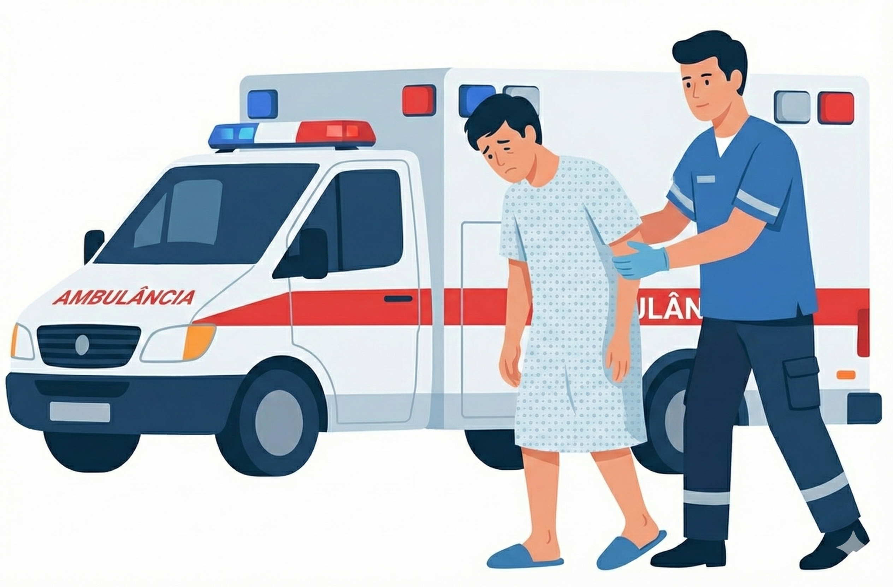

Base: R. Dom José Gaspar, 500 - Coração Eucarístico, Belo Horizonte - MG
Emergência Médica?
Agilize seu atendimento. Saiba quando acionar o SAMU ou acompanhe o deslocamento da ambulância.

Primeiros Socorros
Instruções vitais do que fazer enquanto a ambulância está a caminho.
Ver orientações